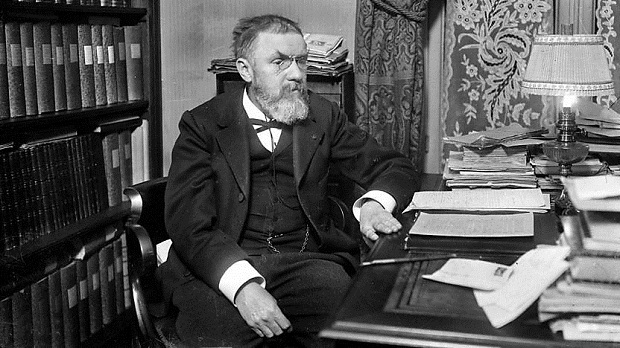
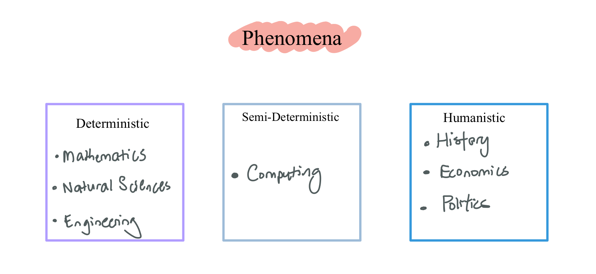
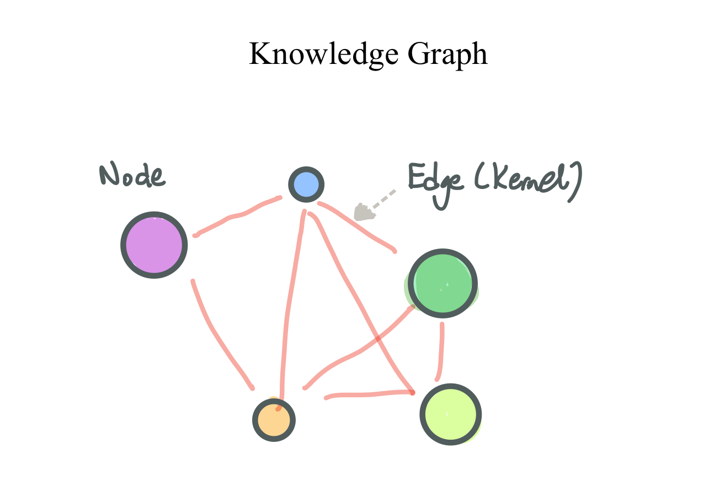
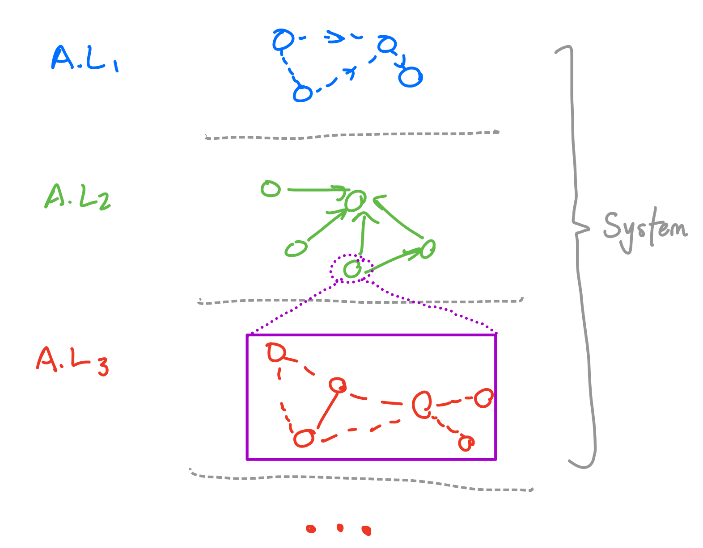
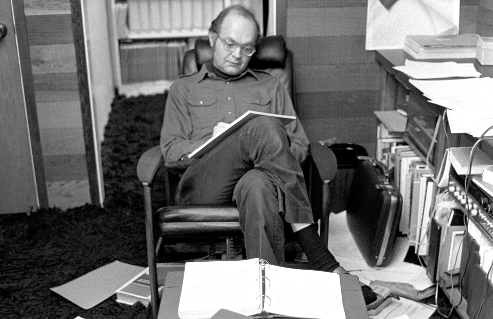
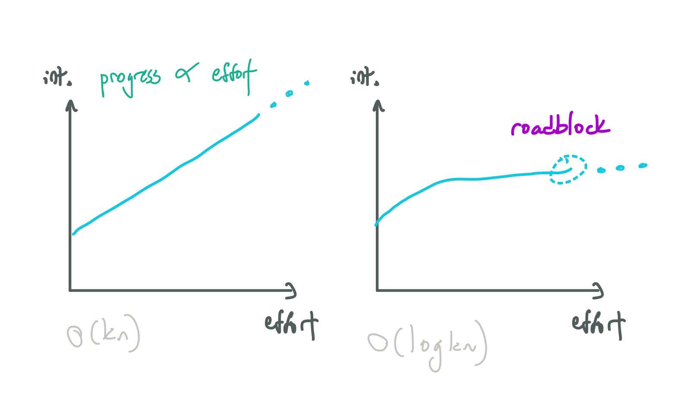
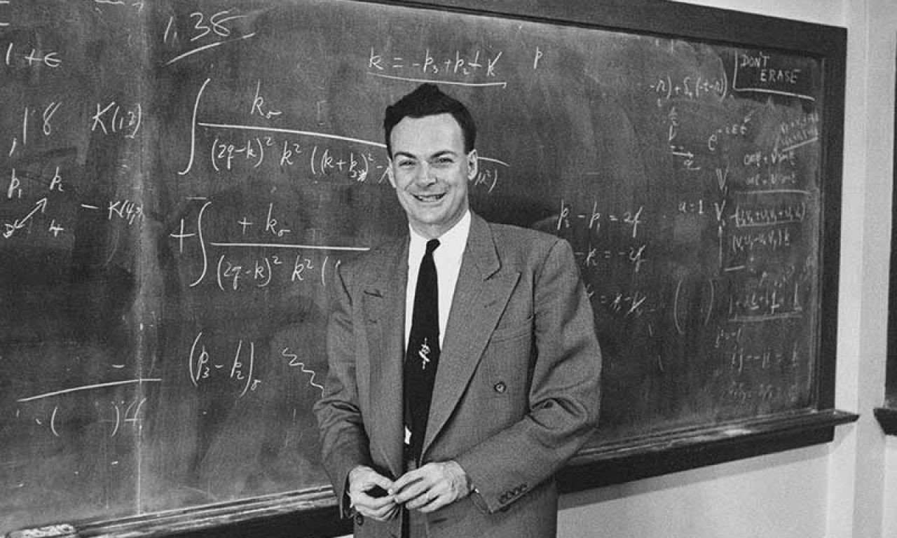

Metacognition and Intelligence
What is a Metacognitive Framework?
What is intelligence? What are the different types of intelligence? Why are some people brilliant in their different fields? Can we distill the different types of intelligence into a general framework? The central question I've been thinking about is this: How do we optimally think about each field?
Where field can be (non-rigorously defined) as an area of expertise - like mathematics, physics, computing, etc. Or more generally, sciences, humanities. Or even more generally, intellectual pursuits, sports, arts.
A Metacognitive Framework
Well, the fundamental idea I want to introduce is a metacognitive framework. The idea is that we can observe very smart people in different fields, try to distill their underlying patterns of thought, and capture them in the right syntactic expression - and learn the optimal pattern of thought for each field.
Then, once we capture these ideal patterns, we (laypeople) can practice using them to learn in a particular field. This implies geniuses are born or naturally use these patterns of thought - it comes easy to them - but laypeople do not. But with a framework, we can distill these patterns and practice.
This, however, doesn't downplay the role of hard work and natural ability. Knowing the ideal pattern of thought for a field is insufficient - one needs to apply it. Some people can wield these abilities better than others - that is natural ability at work. But as the name suggests, if natural ability is immutable, then we can only work within the constraints of our natural talent to maximize our ability.
How are we going to go about doing this? Well, via this iterative process:
- Identify the different fields of knowledge (Complexity assumption)
- Watch or observe experts in fields (Optimal thought assumption)
- Infer their thought process or pattern of thought.
- Capture the pattern of thought with the right words (Syntactic prompt assumption)
- Apply the pattern of thought to see if it works.
Essentially, this is a fancy way of saying observing smart people to extrapolate how they think. I'll call the different fields and the collection of optimal patterns of thought a metacognitive framework. Notice each point is built on a certain assumption in parentheses.
Assumptions
Before we lay out what exactly these frameworks are, I'd like to set some assumptions defining terms. We'll use these throughout the post (having referenced them just now). They can be read in order (one leads into the next):
- Intelligence Assumption - Intelligence is the perception of reality.
- Complexity Assumption - Reality is infinitely complex.
- Optimal Thought Assumption - Different fields have different patterns of thoughts that are optimal to understanding them.
- Natural Talent Assumption - Certain people are innately gifted at different fields because they are naturally predisposed in thinking a certain way that suits that field.
- Learning Rate Assumption - Gifted people in a certain field have a faster learning rate than others in that area because they can utilize the optimal way of thinking for that field.
- Observation Assumption - We can observe gifted people and distill their underlying logical framework or ways of thinking - much like filtering hidden states from noisy observables.
- Syntactic Prompt Assumption - These ways of thinking, or patterns of thought can be distilled or described by the right words.
To expand on syntactic prompt assumption - consider this (translated) quote by Poincaré (1854-1912) in Science and Method (1908):
We have just seen, through an example, how important words are in Mathematics, but I could cite many others. One can hardly believe how a well-chosen word can provide economy of thought, as Mach said. I do not recall whether I have already mentioned somewhere that Mathematics is the art of giving the same name to different things.

This implies we can observe gifted people in their fields, distill their patterns of thought and capture them with specific syntax (words). Now reference back to the iterative process and notice how the assumptions are used in each step.
Learning Process
But how do these patterns of thought explain the learning process? We can also distill the learning process like so:
- Space of Knowledge - There is a space of knowledge that exists.
- Sampling - People sample from the space of knowledge.
- Application - People apply their patterns of thought to the knowledge to build their own understanding (knowledge graph).
Then, the task is to find out:
- The different fields of knowledge (phenomena).
- The different patterns of thought that are optimal for these fields.
- The universal patterns of thought that are optimal to general intelligence.
And so, we can begin with the different fields of knowledge - which I call phenomena.
Phenomena
Phenomena, or knowledge, represents the collection of different subjects of study. I define three categories: deterministic, semi-deterministic, and humanistic phenomena. Once we identify the categories, we can examine the ideal patterns of thought for each of them.
Deterministic Phenomena
Deterministic phenomena are phenomena that have fixed laws that don't change over time - they are invariant.
- This description generally describes fields that study fixed laws of nature - mathematics, natural sciences and engineering.
(The term 'deterministic' has different meanings in physics, probability and philosophy - in this case, I overloaded it to mean 'fixed' - because the former sounds better).
Semi-Deterministic Phenomena
Semi-deterministic phenomena are phenomena that have deterministic nature - fixed laws - which are manmade abstractions. This generally describes the field of computing. They are fixed, but can be created or destroyed by man, in that sense they can 'change'.
- This type of phenomena is only for computing - whereby man creates these laws by making computers execute instructions.
Humanistic Phenomena
Humanistic phenomena arise from human interactions which are weakly deterministic. The ‘laws’ constantly change and cannot be formalized. This phenomena gneerally describes these fields: history, economics and politics.
To sum, based on the nature of the laws, we classify knowledge into deterministic, semi-deterministic, and humanistic phenomena. Now, we can figure out optimal patterns of thought for each of these phenomena. Concurrently, I examined these patterns and tried to use an underlying framework from which each pattern can be constructed. This is the metaframework.
Frameworks
Metaframework
The idea is that regardless of the type of phenomena, knowledge can be represented as a graph. The nodes are individual elements or pieces of knowledge, and edges are connections (made by a kernel). The larger and denser the graph, the better one's understanding and intelligence. So we have:
- Nodes - Individual pieces of understanding. The atomic building block for that phenomena.
- Edges (Connection) - Connections between the nodes.
- Kernel - A mental operation that can be applied to nodes to bind them together into a graph via a connection. A kernel must be simple and repeatable. The pattern of thought is the kernel.
But knowledge as a graph is nothing new, the key distinction is that the nature of nodes, edges and kernels are different for each type of phenomenon, generalizing the idea of an optimal way of thought for each field.
At the same time, we can visualize the interplay between different nodes of the graph via a technique called visualization - this will be expanded upon later once the prerequisites are established. For now, just remember there are two types of visualisation - precise and nonprecise. For now, we can jump into the optimal patterns of thought for each phenomena. We'll examine the evidence/arguments for each one later.
Deterministic Framework
Example Fields: Mathematics, natural sciences, engineering.
Nodes:
We define two types of atomic nodes: concepts and measurements. By the syntactic prompt assumption, they can be represented with words (or symbols):
- Concept - An abstract concept.
- Measurement - A physical variable, with a physical property represented by numbers.
Whereby a measurement is a special type of concept with physical correspondence in reality. Its physical property could be a location, a size, direction - parametrized by numbers.
Edges:
We can then connect concepts or measurements to each other:
- Connection - Connect concepts to each other.
A connection can be direct or latent.
- Direct connections are obvious and well-defined. If one concept or measurement is defined in terms of several others - then it is a direct connection.
- Latent connections are connections that are not explicitly defined. They represent similarities or links between concepts that one can form via some sudden realization. Often times, one makes latent connections between two seeming unrelated concepts in different fields.
Thus, it really is all about connecting concepts or measurements to each other to form a picture in one's head. Other synonyms for connections could be links or interactions.
Deterministic Evidence
Concepts and Connections
To explain how I derived the notion of concepts and connections, we turn to this video: Breakthrough Prize in Mathematics 2014. The Breakthrough prize is a prize funded by Zuckerberg to award mathematicians. In it, he gets them to go up on stage to get a prize and before that, a video of the recipient's commentary on mathematics is played. This was what we used. In 2014, the recipients were Tao, Lurie, Kontsevich, Taylor and Donaldson.
'There are moments where you put something together and realize this is how the story has to go'.
In this quote, the use of 'put something together' made me think: these are concepts that are being put together. Concepts being connected together! The brain draws the connection.
' There is a beauty in the way things fit together in an unexpected way'.
Similarly, things fitting together in an unexpected way implies drawing new connections between concepts were previously there were none! The same idea is expressed by both mathematicians.
Measurements and Interactions
Next, to derive measurements and interactions, we turned to Feynman. 'Fun to Imagine' was a TV series in 1983 in which Feynman talked about how he thought about science or physics especially. In the video on YouTube, Feynman explains the concepts of heat, energy, magnetism and electricity to a reporter with no prior knowledge.
'Atoms in the coffee jiggle, which makes the cup jiggle. Heat is just jiggling spreading, which is easy to understand'.
' It's a mixture of partial solving of equations ... and having some sort of picture of what's happening that the equations saying'.
Feynman explains heat a bunch of atoms jiggling and spreading their jiggling to others via contact. Now, indirectly, he is imagining a measurement (the jiggling) and showing how that interacts with another measurement (another bunch of atoms jiggling).
Unlike the previous example, these concepts have a physical, measurable component in reality - these atoms are out there jiggling somewhere - and we can assign numbers to them to quantify that! So, we have to imagine or visualize the interactions between these measurements. To sum, the idea of connecting concepts and measurements to one another is simple but powerful - and not just using symbols and words, but visualising them too!
Foundational Nature of Deterministic Phenomena
Another key idea is that concepts are foundational - a concept can only be understood once the graph of all the concepts that it was built on previously is understood. The same goes for measurements: being able to perceive a measurement is built on understanding all the prerequisite measurements are understood.
Semideterministic Framework
Nodes
For semi-deterministic phenomena, the key node is the abstraction/computation. Likewise to concepts and measurements, they can also be represented by words:
- Computation - A computation (abstraction) takes inputs and produces outputs (an input-output relation). They can be constructed, via interactions, to form other computations (abstractions).
Edges
The key edge is the interaction.
- Interaction - An computation (abstraction) can interact with other computations by exchanging data via inputs or outputs (e.g the output of one computation is input to another) in a many-to-one fashion.
We can then define an (computation layer) abstraction layer:
- Abstraction Layer - A set of interacting computations (abstractions), visualised as a graph.
Which can be composed to form a system:
- System - An entity composed of different computation layers. Each level in the system is one computation layer. The computations in the layer above are constructed from abstractions in the current layer.
- Composition/Decomposition- We can break down a problem (entity) into smaller parts (abstractions), and keep recursively breaking it down, which translates into going down layers of abstraction from a top-down approach. It is similar to one-to-many connection in the deterministic sense.
The key idea is to be able to jump between different abstraction layers, decomposing an abstraction into its component computations (abstractions), or composing computations (abstractions) into higher-level ones. Notice whether an abstraction/computation (node) is a system is a matter of perspective: if we take the input and output of a system, then the system is a single computation/abstraction node too!
Originally, I called the node an abstraction, but changed it to computation because I felt it better embodied this idea of input → system (computation) → output. I have no evidence of this, but given the syntactic prompt assumption, motivated by Poincaré himself, I feel like choice of words is extremely important to invoke the right 'economy of thought' - and computation works better than abstraction.
Semideterministic Evidence
Computations/Abstractions
As mentioned, the computation/abstraction is a unit that takes input, performs something, and produces output. Computations/abstractions can interact with one another. The core idea comes from this video from George Hotz' livestream:
Input → system (computation) → output. This is my core paradigm for understanding anything.
Hotz' states the idea clearly here - it's all about thinking in terms of inputs and outputs. And hence, the idea of the computation/abstraction as the node was born.
Computation/Abstraction Layers
Next, they interact to form computation/abstraction layers. These are sets of computations/abstractions on a given level. Again, the task is to combine or construct computations/abstractions to form more abstractions. Jim Keller and Donald Knuth both express this idea independently:
There's a relatively good understanding of abstraction layers. Atoms, silicon, transistors, logic gates, functional units, processing elements, instruction sets, languages - abstraction layers from the atom to the datacenter.
In the podcast, Keller describes how abstraction layers are constructed on top of one another. This captures the idea of layering - whereby we can combine abstractions in one layer to produce a single abstraction in the layer above. Knuth extends this idea - talking about fluidly moving between these layers:
'Being able to see something at lots of levels and go between them smoothly seems to be more pronounced in people that resonate with computing'.
Clearly, the idea is to be able to make the connection of what is going on under the hood at different depths of abstraction layers. For example, given the abstraction at the programming language level, Knuth implies being able to dive deeper - say to the compiler level or the memory level, etc is key.
Humanistic Framework
Nodes
In humanistic phenomena, the key node is the actor.
- Actor - A person or collective entity. Actors have a utility function, a perspective and can perform actions. The perspective is derived from processing information.
Note information refers to the collective perspectives of all actors in a context. A context is simply a set of relevant actors.
Edges
There are two types of edges in which actors can interact with one another: actions and propagations.
- Action - An actor processes information, forms a perspective and performs an action in accordance with his utility function. This action involves interacting with other actors.
- Propagation - An indirect effect of the action that involves influencing other actors that were not directly interacted with in the initial action.
Actors perform actions, which propagate to influence other actors in a recursive fashion. It is interesting to note interplay between humanistic phenomena and the other two; understanding the history (humanistic) of a deterministic phenomena (e.g math, science) also helps in the understanding itself of the deterministic field itself - Ed Witten being a prime example.
Humanistic Evidence
Actors & Actions
The actor is the key node, and actors interact with others via actions. This idea came from Soros' The Alchemy of Finance:
'My framework is built on two propositions. The first is that in situations that have thinking participants, the participants’ views of the world never perfectly correspond to the actual state of affairs. The second proposition is that these imperfect views can influence the situation to which they relate through the actions of the participants.'
Note the key terms used - Soros' thinks in terms of participants (actors) and their actions. He alludes to actors having a perspective - from appraising the information. The idea of actors action's influencing in a recursive fashion, called reflexivity, I used and called it propagation.
And so Soros outlines how to think about humanistic phenomena. He writes 'My framework was largely dismissed as the conceit of a man who has been successful in business and therefore fancies himself as a philosopher' - implying academics dismissed this as quackery. Which is ironic, because it clearly works in modelling humanistic phenomena.
Visualisation
Having covered the metaframework and individual frameworks for deterministic, semideterministic and humanistic frameworks. We can turn back to visualization, which was briefly mentioned earlier. The idea is that for each phenomena, we can visualize the graph in different ways.
Visualizing the interplay of different nodes of a graph. It can be precise or nonprecise.
Precise Visualisation
Precise visualisation is a technique for deterministic phenomena. In short, we try to visualize the concepts or measurements and their interplay by simulating each node in a visual space. For example, visualising a vector with a specific length and direction in a coordinate space. There are several parameters to precise visualisation:
- Nodes: concepts/measurements
- Location: headspace/non-headspace
- Orientation: scale/zoom/perspective.
For location, there is an idea of visualising something in headspace - which refers to building the visualisation in your head. The converse is non-headspace - which refers to visualizing something outside your headspace, say in front of you, and in reality. The interesting thing is that I believe non-headspace is key to visualising measurements, because you are trying to simulate the physical aspect of it.
For orientation, there is a notion of scale or perspective - whereby we can zoom in to a very microscopic scale to try and visualize microscopic phenomena, for example zooming in to visualise the shape of orbitals in front of you. Another idea is perspective - which involves imagining you are an observer near the region of interest, and visualize things from that point of view.
Again, these are mental tricks to try and visualise the graph of deterministic phenomena to aid in understanding.
Nonprecise Visualisation
Nonprecise visualisation is a technique for visualising semi-deterministic and humanistic phenomena. Unlike precise visualisation, geometry (e.g angles, lengths and distances) are not important - somewhat evoking a connection to topology. In this case: the nodes are abstractions or actors - and can quite literally be visualised as a graph itself by visualising abstractions as nodes and interactions as edges.
In general, nonprecise visualisation is in $2D$ but precise visualisation can be both $2D$ and $3D$.
The Nature of Intelligence
The Origin of Natural Ability
The question arises - what gives rise to natural ability in different fields? To deduce the true d.g.p is impossible (I suspect it lies in neuroscience) but we can make some observations. Firstly, it seems that some are just born with affinity to a particular pattern of thought - finding it enjoyable or interesting, they specialize in a field that lets them use it because it 'sparks joy':
'I find myself trying to imagine all kinds of things all the time - and I get a kick out of it, just like a runner gets a kick out of sweating - I get a kick out of thinking! I can't stop!'
One perspective is that ability is constrained by natural talent (expressed by Knuth):

'There are people who think it's just a matter of education - anyone can learn to be a great programmer, a great skier. I wish that were true. There were many things I tried - I was well motivated and I kept trying to build myself up - but I could never get past a certain level. I can't view 3 dimensional objects in my head - I have to make a model and look at it and study it from all points of view. But other people are good at 4 dimensions.'
The opposite perspective, expressed by Feynman, is that anyone can achieve significant ability given effort:
'You ask me if an ordinary person, by studying hard, will get to be able to imagine these things like I imagine. Of course! I was an ordinary person who studied hard. There's no miracle people. There's no talent - the ability to understand quantum mechanics, special miracle ability to imagine electromagnetic fields. You take an ordinary person, who's willing to devote a great deal of time, and study and work and thinking, then he's become a scientist!'
What Feynman did not consider was that some people might not even consider visualising physical phenomena like he did in the first place! Not everyone's first instinct is to apply that style of thought like he did! We can look at this via a lens of growth rates.
Linear and Logarithmic Growth Rates
We can borrow the concept of time complexity from analysis of algorithms. In this case, the horizontal axis is the effort put into a field, and the vertical axis is the level of perception, or intelligence.
Consider linear $\mathcal{G}=\mathcal{O}(kn)$ and logarithmic $\mathcal{G}=\mathcal{O}(\log kn)$ growth rates. People naturally adept at the subject will have linear rates - their progress is proportional to effort. But those who are not have logarithmic rates - unable to learn effectively regardless of effort put in.
By identifying the optimal pattern of thought for a field, ordinary people ($k_o$) can transition from logarithmic to linear rates to learn better. While they can never surpass a person with natural ability ($k_{n.a} \gg k_o$), they can at least improve their rate of learning to get linear progress and not logarithmic progress.
Another point is the rate of change of growth rate $\mathcal{G}'$. For linear g.rs, $\mathcal{G}'= k$. But $k$ is not stationary! It can change over time. What determines $\mathcal{G}'$ could be natural ability. But the key point is one's ability is not stationarity - it can increase over time - the only question is how fast.
Generalized Intelligence
It's worth noting that with the aforementioned definition of intelligence, what has been explained in this post is mental intelligence. There are other aspects - physical (spatial, kinesthetic, aural) and emotional intelligence. A world-class athlete has the spatial awareness to anticipate the trajectory of a ball, and the kinesthetic intelligence to coordinate his body to connect with the ball in a precise fashion. Not all fields require pure mental intelligence, for example - consider a field like surgery or dentistry, the surgeon must have kinesthetic intelligence to be able to have the fine motor control to manipulate his tools precisely.
Closing
There are other questions to ponder:
- From a neuroscience perspective, can an optimal pattern of thinking be measured as a specific sequence of brain activity?
- What is the underlying d.g.p behind the spectrum of natural ability across different fields?
These are all cognitive neuroscience questions - I am not qualified to answer. Personally, I've been thinking about this problem for a few months, so writing this let me consolidate my thoughts.
To summarize, everything intellectual can be classified into three types of phenomena: deterministic, semideterministic and humanistic. A phenomena consists of fields. Each phenomena has an ideal or optimal style of thinking, captured by a framework, which was in turn empirically deduced from observing experts in that field. This is captured into specific syntax which invokes that pattern of thinking. Some people are born with the natural ability to efficiently grasp and use the style of thinking optimal for a field, some people do not naturally think that way and hence cannot learn as effectively. The latter can use the m.c.f to gain some improvement in growth rates in understanding a field.
On Inference
The example quotes above are just some of the people I've analyzed and tried to understand their pattern of thoughts. I may continue doing this and writing another post entirely focused on examining the evidence with much more nuance and detail. More to come! Feynman asked a similar question:
'I suspect, that what goes on in every man's head - might be very very different - the actual imagery or semi-imagery which comes. And when we're talking to each other at these very high levels, and we think we're speaking very well, but what we're really doing is having some big translation scheme going on; translating what this fella says into our images - which are very different.'
As for the frameworks, I am quite happy with deterministic and humanistic ones - I think they make sense and work well - but I am not quite comfortable with the semi-deterministic framework - it's not very elegant and quite messy. I hope to come up with a simpler alternative soon.